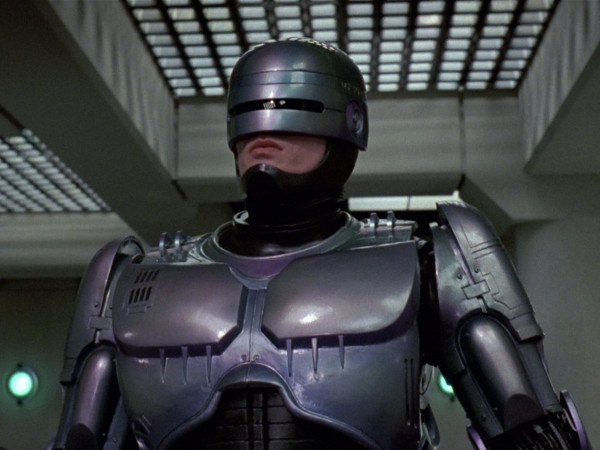
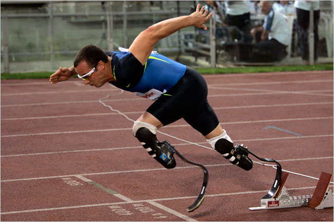
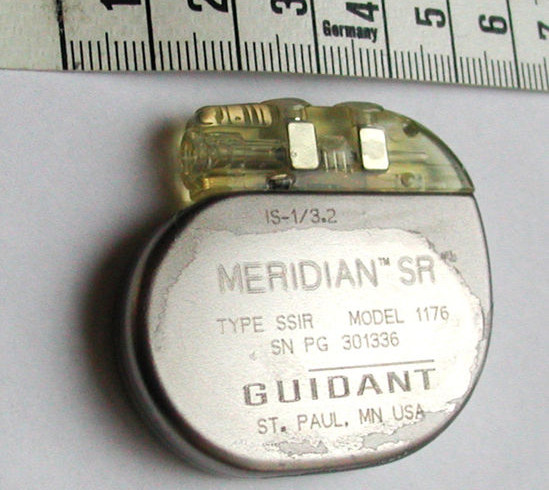

 (Robocop (c) Orion Pictures 1987)
 (Oscar Pistorius by Andrew Medichini/Associated Press)
Neil Harbisson mit seinem Eyeborg Implantat
Erster "staatlich anerkannter" Cyborg
 (Herzschrittmacher, Bild J. Heuser, Wikimedia Commons)
"Der Begriff Cyborg (von cybernetic organism)
bezeichnet ein
Mischwesen aus
lebendigem Organismus und
Maschine."
(Wikipedia)
=> "Mensch ist der Körper und was drin ist"
"You don't have a mind. You are a mind, you have a body."
frei nach George MacDonald
| Table of Contents | t |
|---|---|
| Exposé | ESC |
| Full screen slides | e |
| Presenter View | p |
| Source Files | s |
| Slide Numbers | n |
| Toggle screen blanking | b |
| Show/hide slide context | c |
| Notes | 2 |
| Help | h |